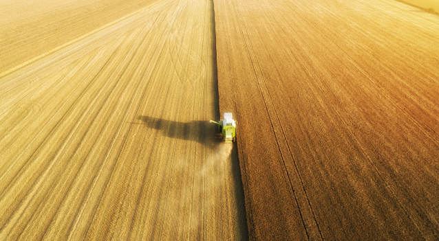
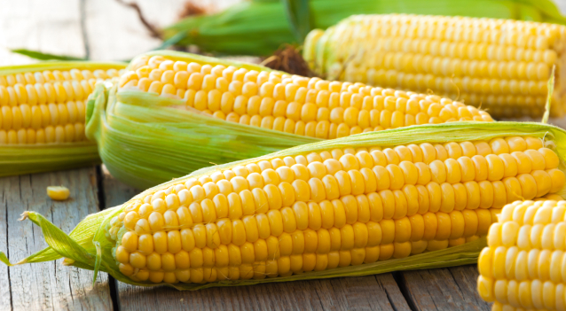
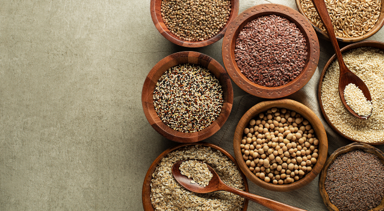

News
-

Named TOP-5 regions in terms of the yield of major crops
As of December 10, Ukrainian agricultural producers have already harvested 82.7 million tons of staple crops from an area of almost 24 million hectares, of which grain and leguminous crops account for 64.3 million tons (15.2 million hectares, 99%).
Read More -

Maize harvesting is still going on in half of Ukraine’s regions
As of December 7, 2020, Ukrainian agrarians continue to harvest corn and thresh 27.9 million tons of grain from an area of 5.2 million hectares (96%).
Read More -

Ukrainian seed exports reached the best indicators in 10 years
Exports of seeds of grain and oilseeds in January-September 2020 amounted to $ 16.5 million, which is 30% higher than the annual figure for 2019 of $ 12.7 million. This is the best performance over the past 10 years.
Read More -
Maize harvesting is still going on in half of Ukraine’s regions
As of December 7, 2020, Ukrainian agrarians continue to harvest corn and thresh 27.9 million tons of grain from an area of 5.2 million hectares (96%).
Read More -
Ukrainian seed exports reached the best indicators in 10 years
Exports of seeds of grain and oilseeds in January-September 2020 amounted to $ 16.5 million, which is 30% higher than the annual figure for 2019 of $ 12.7 million. This is the best performance over the past 10 years.
Read More